Введение в Python с PyCharm Educational Edition
Компания JetBrains сделала еще один шаг навстречу образованию, выпустив PyCharm Educational Edition, образовательную версию среды разработки для Python, которая включает в себя возможность создавать интерактивные курсы.
Также PyCharm Educational Edition содержит предустановленный курс "Introduction to Python", который хорошо подходит для тех, кто начинает изучать Python.
Разумеется, я не мог его обойти стороной, и сегодня мы будем вместе его проходить, а заодно и познакомимся с этим замечательным редактором.
Установка PyCharm Educational Edition
Устанавливаем отсюда.
После установки вас спросят, не хотите ли вы импортировать настройки из других версий PyCharm.
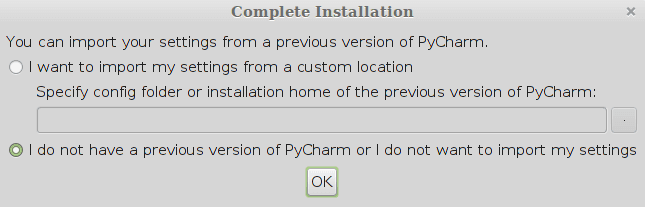
Так как у вас (скорее всего) не было других версий PyCharm, оставляете как есть.
После запуска PyCharm вас встретит таким вот окном:
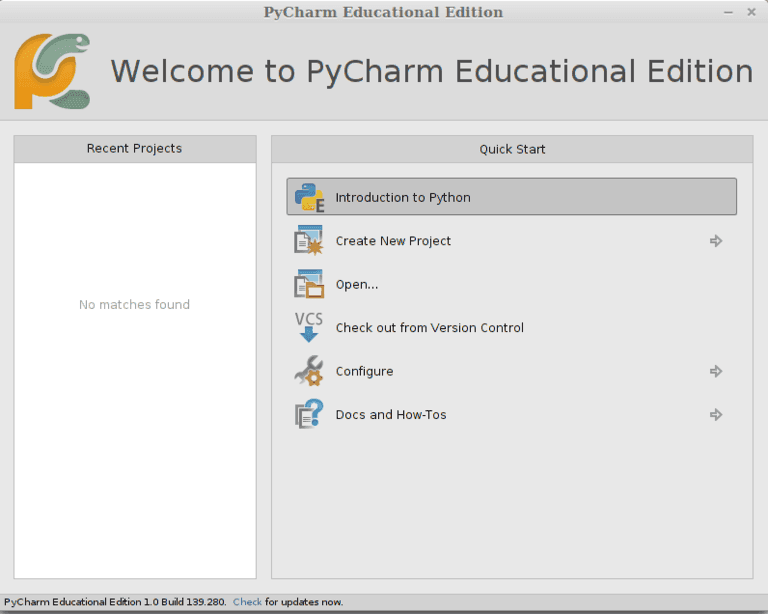
Выбираем "Introduction to Python". И начинаем!
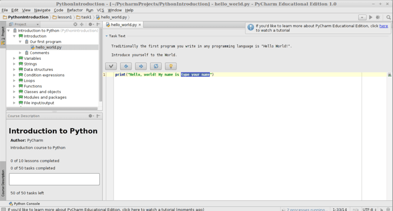
Вводное задание. Печатаем своё имя (или не своё), нажимаете галочку, получаете поздравления, и переходим к следующему заданию с помощью стрелки вправо.
Может так случиться (особенно если вы сидите на linux), что PyCharm по умолчанию поставит интерпретатор Python 2.
Поэтому проверьте, и при необходимости поменяйте интерпретатор (File → Settings → Project Interpreter)
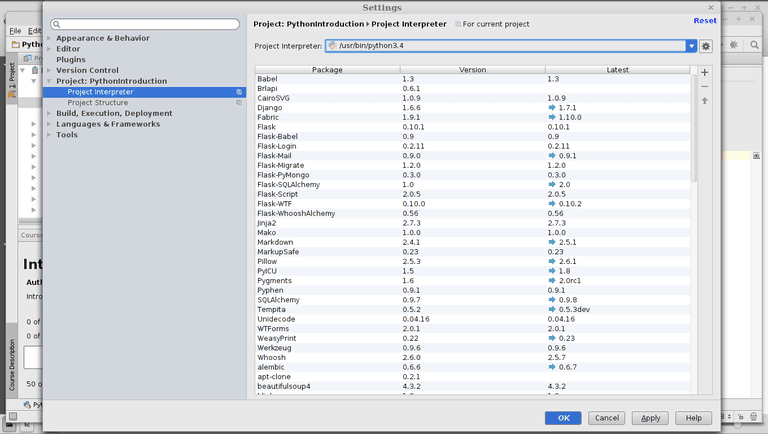
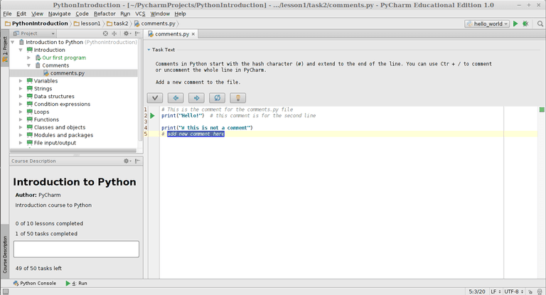
Комментарии. Достаточно написать любой комментарий. Кстати, в PyCharm нажатием "Ctrl и /" можно закомментировать / раскомментировать любую строчку.
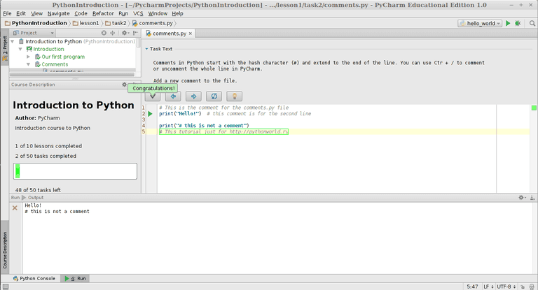
Переменные в Python являются ссылками на объект.
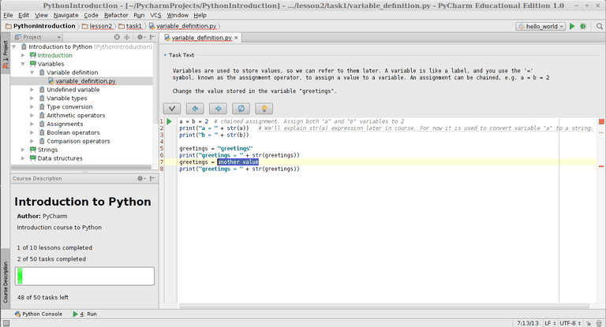
Нужно изменить значение переменной greetings.
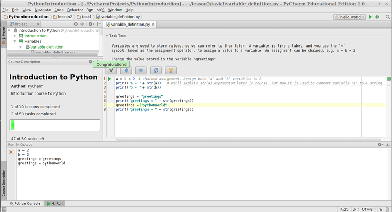
Задание 4: Несуществующие переменные
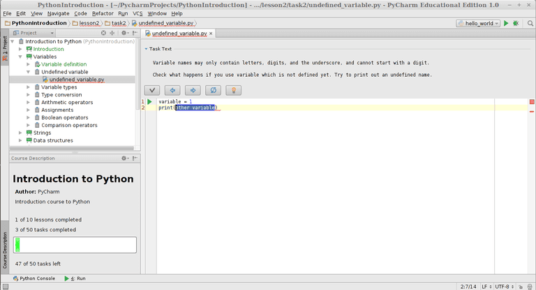
Нужно попытаться вывести несуществующую переменную.
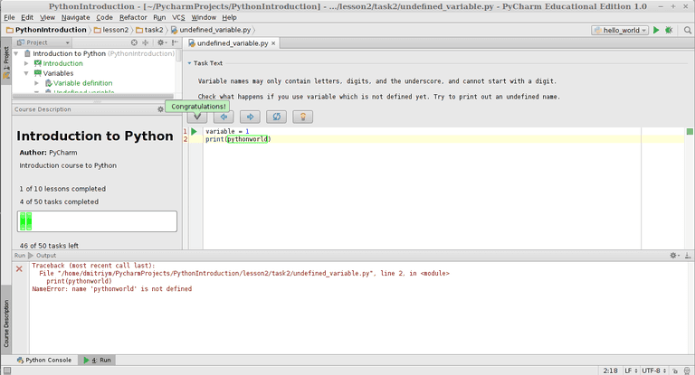
Как видите, вызвалось исключение NameError.
У каждого объекта есть тип (например, int или float).
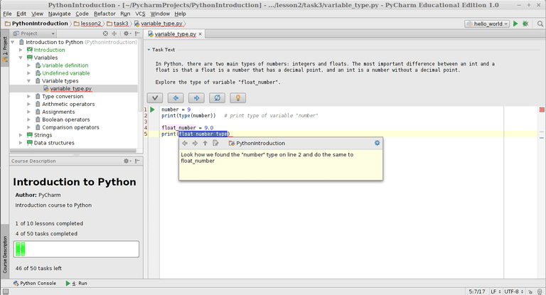
Посмотреть тип переменной в данный момент времени можно с помощью встроенной функции type.
Кстати, в курсе есть подсказки, которые появляются при нажатии на лампочку.
А также в PyCharm работает автодополнение.
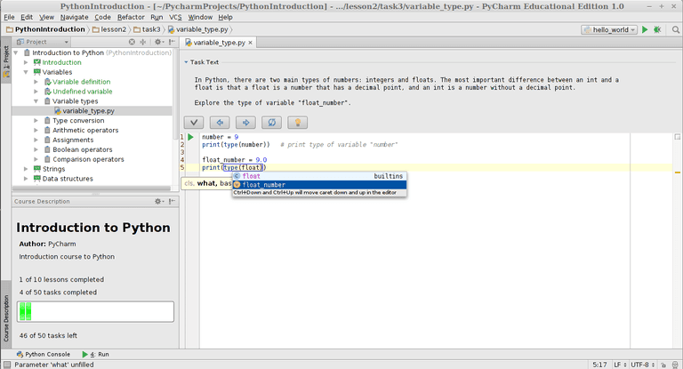
Задание 6: преобразование типов
Типы можно преобразовывать с помощью соответствующих функций.
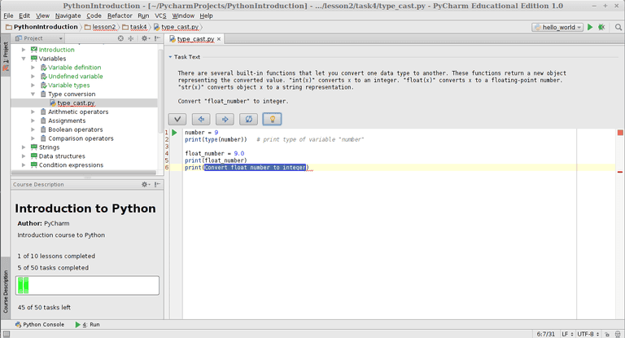
Преобразование к целому числу можно выполнить с помощью функции int.
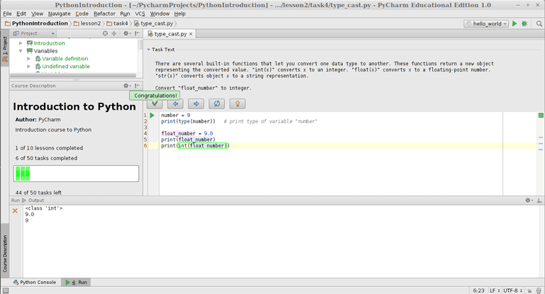
Задание 7: арифметические операции
Python поддерживает арифметические операции: сложение (+), вычитание (-), умножение, (*), деление (/), целочисленное деление (//), взятие остатка от деления (%), возведение в степень.
Сразу ответ к заданию:
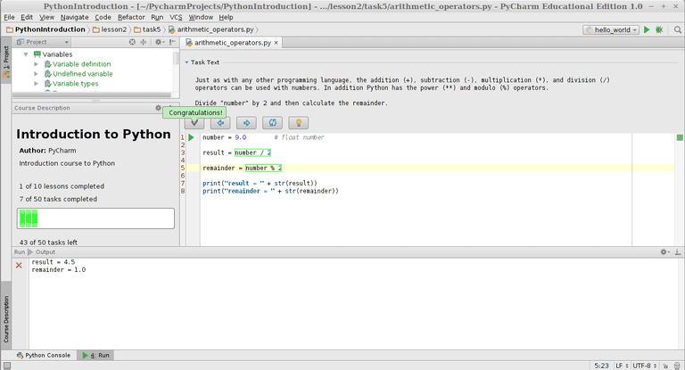
Как видите, курс несложный, прекрасно подходит для начинающих, а также позволяет легко научиться работе с PyCharm. Советую пройти его весь, тем более, что на каждое задание есть подсказки.
Если останутся вопросы, Python-сообщество всегда радо будет помочь.